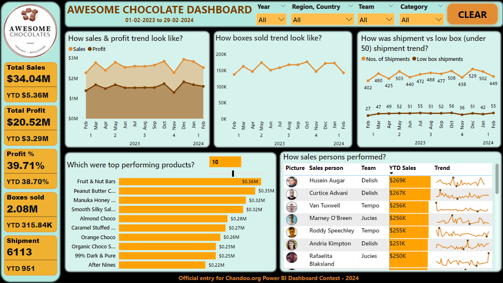

In this project we take famous paintaings data in CSV formats,
import those in PostgreSql server using create_engine from sqlalchemy and pandas of Python
and answer several questions using SQL queries.
This is the final project in my Google Data Analytics Professional Certificate course. In this case study I will be analyzing a public dataset for a fictional company provided by the course. I will be using SQL & Power BI for this analysis. This is because SQL can handle large amount of data (5+ million rows of data in this project) very easily and Power BI is a very useful data visualization tool.
An interactive and dynamic dashboard developed by Power BI for a fictitious company sales cars across USA. Some features used in developing the dashboard are
Time intelligent function like CALENDAR, Advance DAX functions like TOTALYTD, CALCULATE, TOTALMTD, CONCATENATE, IF, MAXX, ALLSELECTED etc.
Some visuals used in developing the dashboard are Card, Area Chart, Donut Chart, Map, Table, Slicer, Page Navigator Buttons & Data Bars under Conditional formatting

I developed a dynamic and interactive dashboard in Power BI for this project to monitor and analyze shoe sales for a company.

In this project I developed a dynamic and interactive dashboard in Power BI of a fictitious company named 'Awesome Chocolate'
which sells chocolate products across the globe. This dashboard was designed and developed under participation in a competition organized by chandoo.org.
The dataset was provided as part of the competition.
30 Day SQL Query Challenge is covering 30 SQL Queries of varying complexity. This project aims to provide 30 SQL Queries that can be asked during SQL Interviews.

This project has been done as part of Course 2: Get Started with Python of Google Advanced Data Analytics Professional Certificate. In this project, I examine a dataset of New York City Taxi Rides with Pandas, a popular data analysis tool of the Python programming language, and prepare it for Exploratory Data Analysis (EDA). Some of the functions I used here are: shape, info, describe, sort_values, groupby, aggregate etc.
This project involved consolidating several TSV files into a single file. Each TSV file required transformation and merging before being merged into the final single table.
Also data in each TSV file isn't in standard tabular format. First few data points are in column like format (unlike standard row like). And other data points are in standard row like format.
All those data are extracted and converted into standard row like format and merged into a single table in a single excel file.